数据分区
概述
分布式数据处理系统第一个要解决的问题就是如何将数据进行拆分，利用多台计算机处理大规模数据。对于数据量很大的数据集，单机无法保存或者处理时，通过对数据集进行水平拆分，将不同的数据子集存放到不同的处理节点，这种对数据进行拆分的方式叫做 分区（partition）。
不同数据库中对分区的名称定义有所差异，有些称之为分区（partition），有些称之为分片（sharding），还有一些称之为区域（Region），但是其含义都是基本相同的。需要注意的是，这里的分区跟 CAP 中的网络分区和单机的单机分区表没有关系。
对于大部分实现方案，数据被分区后，各个分区由不同的独立、完整的数据库进行保存和处理，然后由一个或多个协调节点进行请求的路由处理。基本结构如下图所示：

- CN: 协调节点（coordinator node），根据分区策略对数据做分区处理。
- DN: 数据节点（data node），用于保存数据，独立维护自己的元数据，通常都是完整的数据库，每个 DN 保存一个数据子集，每个数据子集都是一个分区。
这里给出数据分区下的数据处理基本单元的逻辑结构，协调者和数据分区可能在同一个进程中或者同一个节点中。
通常情况下，对 SQL 数据库、KV 数据库进行分区的处理策略类似，每条记录数据、一个键值对保存在一个分区中，分区策略定义了对每条数据的处理方式，SQL 数据集库一般在建表时通过 SQL 语法指定分区策略，KV 数据库一般是数据库内部进行分区，数据库多个分区进行操作时，对应用通常是透明的。
在无共享架构下，对大数据集进行分区处理是当前分布式数据处理系统最常见处理方式。分区主要是为了提升系统的 可扩展性，读写负载都可以随着分区的增加而扩展。不同的分区可以放在无共享集群中的不同节点上。因此，大数据集可以分布在多个磁盘上，并且查询负载可以分布在多个处理器上。
对于在单个分区上运行的查询，每个节点可以独立执行对自己分区的查询，因此可以通过添加更多的节点来扩大查询吞吐量。复杂的查询可能会跨越多个节点并行处理。
在本文中，我们将重点介绍划分大数据集的分区策略，简单介绍对多个分区进行数据操作的方法，然后介绍如何协调查询将请求路由到处理节点，最后我们介绍业界分布式数据库系统对数据分区的处理策略。
分区策略
对于一个分布式数据处理系统，将数据分布到多个分区有两种比较典型的方案：
- 一种是根据键做哈希，根据哈希值选择对应的数据节点。
- 另一种是范围分区，某一段连续的键都保存在一个数据节点上。
哈希分区
哈希分区是最常见的数据分区方式，通过按照数据的key、或者用户指定的一个或者多个字段计算哈希，然后将计算后的哈希与计算节点进行映射，从而将不同哈希值的数据分布到不同节点上。
例如，有3条记录(key1, value1), (key2, value2), (key3, value3) 通过对键进行计算哈希（对 key 进行 md5哈希，然后取前两个字符作为哈希值），哈希桶个数255个，当前有两个分区，偶数哈希值放到分区0，奇数哈希值放到分区1，计算后的数据分布如下图所示。

哈希分区需要仔细选取哈希函数，如果用户可以指定哈希字段时，则要考虑字段经过哈希之后散列性是否满足需求。如果选取的哈希函数散列性较好，则可以将数据大致均匀地分布到几个分区中。
哈希分区的一个优点是，保存的元数据很简单，只需要保存桶与分区的映射关系即可。但是缺点也很明显，可扩展性差，如果增加一个节点进行扩容，则需要对所有数据进行重新计算哈希，然后对数据进行重新分布，对于均匀分布的哈希函数而言，一般而言，在扩容时每个分区都需要扩容，通过成倍增加节点，然后通过调整映射关系，重新分布一半的数据到新分区。另一个缺点是，如果哈希函数选择不合理，则很容易出现数据倾斜，导致某个分区数据量很大。
范围分区
按数据范围分区是另一个常见的分布方式，通过按照数据的key、或者用户指定的一个或者多个字段计算所在的分区范围，从而确定数据所在的分区。
例如，一个简单的例子：key 小于等于 r 的分布到分区0，key 小于等于 z 的数据分布到分区1，三条记录(a, value1), (r, value2), (x, value3)则分别分布到了分区0，分区0，分区1中。

对于手动可以指定分区范围的系统，则在创建数据模式时指定那些字段作为分区字段，分区范围是什么。有些系统则是数据库系统自动进行范围分区。
当然分区也会出现上面哈希分区出现的数据倾斜问题，为了保证数据负载均衡，有些系统则采用了动态分区调整或者分裂，使得每个分区的数据量尽可能相同。
与哈希分布不一样的是，范围分区需要记录所有的数据分布情况，可能会有大量元数据。范围分区还有一个问题是，对于特定的数据处理请求可能会造成热点访问，例如我们按时间进行范围分区，每天的数据保存在一个分区上，则对某一天的数据查询处理，只能在这一个分区上进行，无法利用多分区的并行处理能力，这时就要求应用开发人员定义分片特征时，仔细选择特征字段进行范围分区。
其它策略
除了上面两种较常见的数据分区策略之外，还有一些其它的一些分区策略：
- 复制：无分区，在各个分区节点上都保存相同的表，对于数据量较小需要频繁访问的数据，可以采用复制表。这里的复制与节点保证高可用的主备复制不同。
- 轮询：新增数据循环插入到不同的分区，每个分区数据均匀，但是对于数据请求路由，并不能根据请求的条件获取到所在的分区，查询或者更新时需要将请求发送给所有分区节点。
- 列表：指定数据分布方式，对于某个值指定所在的分区，例如，
(1, 2, 4) in P0，(3, 5) in P1。 - 一致性哈希：通过一致性哈希函数计算数据的哈希值，一些系统中也在使用这种分区方式。
- 动态分区：单独的定位器服务跟踪节点之间的分区，动态分区对数据分布不均匀的数据更适用。
除了上面提到的分区策略之外，组合多种分区策略在实践中也有使用。
上面是最常见的分区策略，但是分区一般都需要应用程序考虑数据的特征，针对数据特征选择合适的分区策略。
随着业务数据越来越多，或者需要系统支持更大的吞吐量，我们可能需要考虑对分片上的数据重新分布，重新分布数据时还需要能正常处理业务，对大量数据进行重新分布需要非常大的代价。对于当前的新型 NewSQL 数据库比如 TiDB、Cockroach 数据库，都使用了基于字典序的自动范围分区策略，每个分区保存很少的数据量（64MB），分区根据数据量和负载进行动态平衡、分裂、合并，动态分区对可以较容易地支持数据重分布。
分区的问题
前面已经大致大致给出了分区的一些问题，分区策略确定后，根据分区特征计算出的分区数据量必须能够在单个节点上保存，单个分片是存储单位，不能跨越多个分区，这是一个很强的假设，并且在后续很难被改变。
范围分区很容易出现热点访问的问题，离散的哈希分布可能会解决这个问题，但是对哈希分布对数据重分布处理起来很困难。
动态分区对不平衡数据更友好，但突发的负载量可能会降低其有效性。在动态分区的情况下，可能需要大量的元数据进行分区的管理，这也是一个很大的挑战。
对于选择通过多个分区做扩展的分布式数据库而言，有几个通用的问题需要解决，首先就是跨分区的一致性保证，大部分常用系统是通过 2PC 来解决分布式事务一致性问题，但是 2PC 在一些故障场景下，可能需要人工干涉才能解决，有些数据库甚至不提供一致性保证。其次就是跨分区的连接、聚合等操作等，有些数据库则提供了对部分算子的优化，其它算子则通过较低性能的解决方案用于解决多分区的连接，在这种情况下，需要应用侧权衡是否适用于当前业务。
还有一个值得关注的方面是，用于分析的大规模并行处理（MPP）关系型数据库，其主要场景是用于支持商业决策的数据分析类数据仓库，MPP所支持的查询类型比其它交易型数据库要复杂很多，查询包含多个连接，过滤，分组和聚合操作，查询优化器将查询分解成许多执行阶段和分区，这样可以在多个分区上并行执行。
数据路由
上面我们介绍了将大数据集拆分到不同分区的策略，但是如何将用户的数据操作请求发送到对应分区呢？随着数据的重新分布，分区对应的节点也会随之发生变化。一般情况下，分区的路由信息需要由某个组件进行维护，根据不同维护路由信息组件不同，我们可以将常见的路由方式分成如下四种：
- 协调组件维护路由信息，如果有多个协调组件，每个组件都需要保存相同的分区信息，保证客户端连接到任意协调组件时都可以正确进行请求的路由。对于 SQL 分区数据库，可能需要在执行 DDL 操作时，需要将DDL 操作信息发送到其它所有的协调节点，客户端连接到其它 CN 时也可以正确对数据进行路由。
- 元数据服务器保存路由信息，每次客户端从元数据服务器获取分区信息，或者订阅元数据信息，只有路由信息发生变化，则通知协调节点。
- 客户端直接访问分区数据，客户端保存了分区信息，客户端直接进行路由计算。
- 分区节点直接提供路由支持，允许客户端连接任何分区。如果该节点恰巧拥有请求的分区，则它可以直接处理该请求；否则，它将请求转发到适当的节点，接收回复并传递给客户端。

实例分析
PGXC
在MPPDB中，每个表可以被定义为分区或者复制方式，分区策略仅支持 hash 分区，路由信息全部记录在CN中，多个CN的元数据保持一致。分区相关信息在下面几个系统表中定义：
PGXC_NODE记录节点信息，也即CN和DN地址地址相关路由信息。PGXC_CLASS记录建表时指定的分区策略，所在的 group 等。PGXC_GROUP记录节点组信息。
通过上面的几个系统表，完全描述了分区所在的节点，分区策略，以及路由等信息。
CockroachDB
CockroachDB 将数据存储在单一键值对的有序映射中。分布策略是自动的范围分区。键空间描述了集群中的所有数据以及其位置，将其分割为我们称之为 “range” 的连续的键空间块，这样每个键总是可以在单个范围内找到。单一键值有序映射有两个基本的元素构成：
- 系统数据，其包含了 元范围（meta ranges），描述了数据在集群中的位置。所有 range 的位置保存在键空间开始部分的两级索引中，称之为元范围，一级索引（meta1）定位二级索引，二级索引（meta2）定位数据。每个节点都可以定位 meta1 范围（称之为范围描述符，下面有详细介绍），这个 range 不会分裂。
- 用户数据，保存了集群中的 表数据（table data），这些数据保存在元范围后面。这些数据被分成称为范围的连续键空间的 64MB 的 range。这些 range 在集群范围内被随机排列。
当一个节点接受到请求时，通过比较请求中的键和 meta2 范围中的键，找出请求要被路由到哪个节点。然后这个节点发送这些 KV 操作给对应的 range 所在节点（在二级索引 meta2 范围中保存）。但是，数据可能被移动，在这种情况下，不再有该信息的节点会回复它现在所在的请求节点。在这种情况下，我们继续返回到二级范围，然后更新信息后重试。
参考资料
- Designing Data-Intensive Applications
- Postgres-XC Concept, Implementation and Achievements
- https://www.cockroachlabs.com